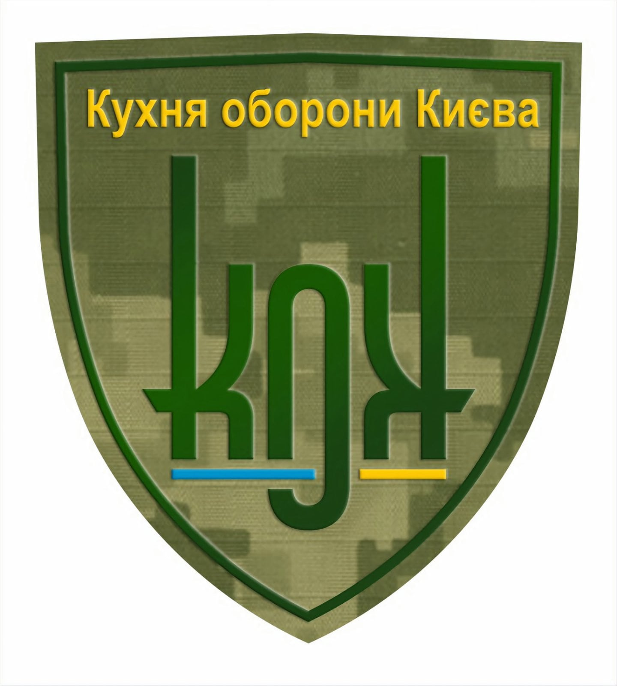

 "КоК" Кухня оборони Києва існує з 26 лютого 2022року. Вже на третій день війни було прийнято рішення допомогати, готувати заради перемоги. За допомогою бажання, наполегливості та підтримки небайдужих людей ГО"КоК" отримала великий кредит довіри і чималу фінансову допомогу, яку спрямувала на приготування їжі в часи критичної необхідності оборони нашої столиці, міста Киева.
Цей рух розпочато трьома друзями, колегами, шеф-кухарями для того, щоб якомога швидше здобути перемогу для незалежної України. Метою нашої діяльності завжди буде надання допомоги населенню України, військовим та потерпілим громадянам і членам їх сімей внаслідок воєнної агресії в Україні зі сторони росії.
Ми завжди готові до співпраці з усіма, хто готовий приєднатися до плідної роботи у цьому напрямку. Це можуть бути: бізнесмени, приватні особи, різні благодійні фонди, іноземні інвестори та багато інших не байдужих людей та організацій. Щиро дякуємо всім людям, які плідно працюють разом з нами пліч о пліч у всі ці важкі часи. З повагою, Юрій Фролов, Олександр Смірнов, Ульянов Ілля. Кухня оборони Києва "КоК"
Телефон: 067 988 06 05
Facebook
Instagram
Гривня. Назва отримувача: КОК ГО Код отримувача: 44780093 Рахунок у форматі відповідно до стандарту IBAN: UA053052990000026005006231127 Назва банку: АТ КБ "ПРИВАТБАНК"
Евро Реквізити компанії/Company details (Назва компанії/company Name) : КОК ГО (IBAN Code) : UA793052990000026009046226251 (Назва банку/Name of the bank) : JSC CB "PRIVATBANK", 1D HRUSHEVSKOHO STR., KYIV, 01001, UKRAINE (SWIFT code банку/Bank SWIFT Code) : PBANUA2X (Адреса компанії/Company address) : UA 02121 м. КИЇВ Банки кореспонденти/Correspondent banks (Рахунок в банку кореспонденті/Account in the correspondent bank) : 400886700401 (SWIFT Code банка-кореспондента/SWIFT Code of the correspondent bank) : COBADEFF (Банк кореспондент/Correspondent bank) : Commerzbank AG, Frankfurt am Main, Germany або (Рахунок в банку кореспонденті/Account in the correspondent bank) : 6231605145 (SWIFT Code банка-кореспондента/SWIFT Code of the correspondent bank) : CHASDEFX (Банк кореспондент/Correspondent bank) : J.P.MORGAN AG, FRANKFURT AM MAIN, GERMANY